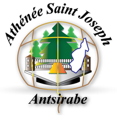

Ingénieur en développement logiciel,
Je travailles actuellement chez Proximity BBDO Indian Ocean en
tant que Consultant (Représentant de la société Bolzano Mauritius Ltd),
Mon profil :
Expériences professionnelles |
|---|
|
Juin 2017 - Octobre 2018 Maurice Proximity BBDO Indian OceanPoste: Software Engineer
|
|
Juillet 2016 - Juin 2017 Madagascar MadamonitorPoste: Développeur .NET
|
|
Décembre 2015 - Juin 2016 Madagascar FAST RESPONSE - INGENIERIE INFORMATIQUEPoste: Développeur
|
|
Mai 2015 - Octobre 2015 Madagascar Projet universitaire pour MasterTheme: Reconnaissance de plaque d'immatriculation de voiture pour l'ouverture d'une porte de garage
|
|
Mars 2013 - Juillet 2013 Madagascar Projet universitaire pour LicenceTheme: Informatisation de la gestion du restaurant du Complexe Hôtelier Antsaha Antsirabe
|
|
Mars 2013 - Juillet 2013 Madagascar Projet universitaire pour Licence 2Missions:
|
Formation |
|---|
|
2014 - 2015 Madagascar

Athénée Saint Joseph Antsirabe (ASJA)Sciences et technologiesMaster en InformatiqueOption Génie Informatique |
|
2012 - 2013 Madagascar Athénée Saint Joseph Antsirabe (ASJA)Sciences et technologiesLicence en InformatiqueParcours Développement d'Application Informatique |
Compétences informatiques |
|---|
Langages de programmationC#, Java, JavaScript, PHP Base de données relationnellesSQL, TRANSACT-SQL Technologies Front-EndHTML/CSS, Bootsrap, JQuery, Angular, ReactJs Technologies MicrosoftSql Server Reporting Service (SSRS), Windows Presentation Foundation (WPF), Windows Communication Foundation (WCF) CMSSitecore Framework.NET Framework, Symfony, CodeIgniter MéthodologieUnified Process(UP), UML VersionnageGit, SVN |
Compétences linguistiques |
|---|
Anglais, Francais, Malgache |
Centres d'intérêts et loisirs |
|---|
Télévision, Cinéma, Religion, Union de Groupe Biblique de Madagascar, Sports (Basketball, Football), Formations, Projets informatiques, Jeux vidéo, Réseau social, Voyage. |